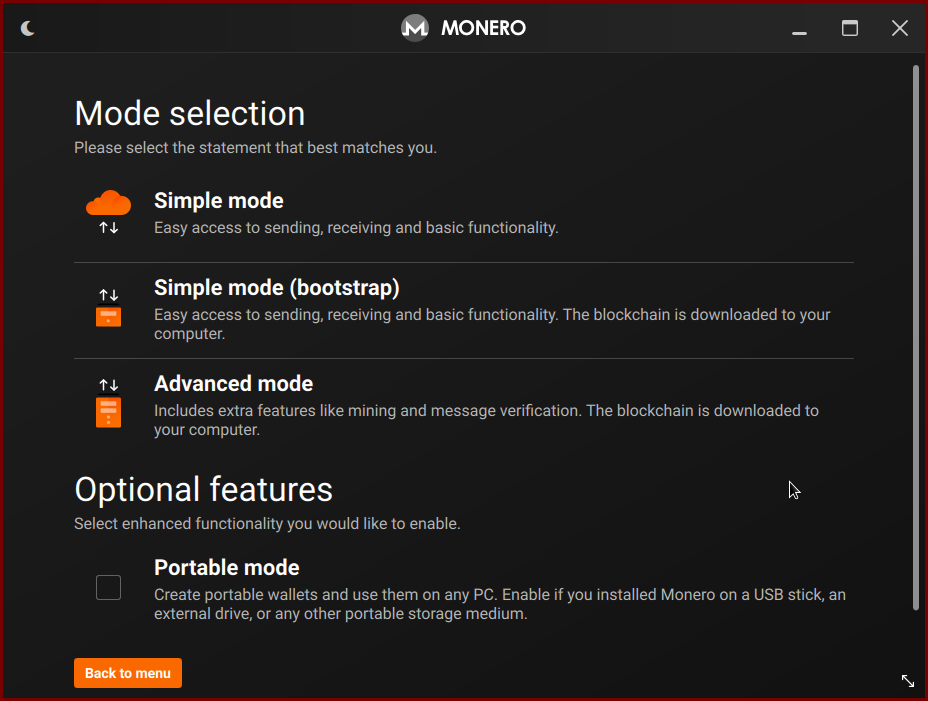

Monero (abbreviated XMR) is easily the cryptocurrency most actually used as such. Unlike Bitcoin, Monero is actually private and has very low transaction fees. That makes it a good idea to get a Monero wallet and add an address on your website where you can receive donations.
Generate a Monero wallet
Got to https://www.getmonero.org/downloads/ to Monero's official site and you can download either the GUI (graphical) or CLI (command-line wallet).
Some Linux distributions will have these packages in their repositories (monero and monero-gui on Arch-based distributions).
Once you install and run the wallet program, you will get a menu like this:
Now if you want to start using Monero and using it as a pro, you can choose to download the whole blockchain which will maximize your transactional privacy, however for this tutorial or setting up a wallet, we can just do the Simple Mode and save our bandwidth. In fact, if you are paranoid, you can disconnect your computer from the internet while generating a wallet.
Now we choose to create a wallet.

Now we get the most important and sensitive part, you private mneumonic seed. These words are sacred! They are your money! To be clear, they are randomly generated words that seed the randomness required to unlock whatever money you receive or hold. Never show these words to anyone, don't even keep them on your computer, but write them down and store them securely in real life in a safe or somewhere where only you have access.

Finally, we get to the main wallet screen.
Now we see your public sharable wallet receiving address.
It is the thing that starts with 4 and is too long to be included in the image below labeled "Primary address."

Click the clipboard next to it to copy the whole sequence (which will be more than 90 letters and numbers) to your clipboard. This is your address. Put it on your website and you can receive donations!
You can also click to save that QR code image and you can put it up on your website and people will be able to scan it and send you Monero. When scanned, that QR code will read as the public donation address.
What do I do now?
You can now receive Monero/XMR donations! All you need to do is put either your full address or your QR code on your site and people can send you tips in Monero.
Here is the address we use for this site (i.e. not the compromised wallet generated above):
84RXmrsE7ffCe1ADprxLMHRpmyhZuWYScDR4YghE8pFRFSyLtiZFYwD6EPijVzD3aZiEpg57MfHEr1pGJNPXyJgENMnWrSh

It's now up to you how and where to display these on your site.